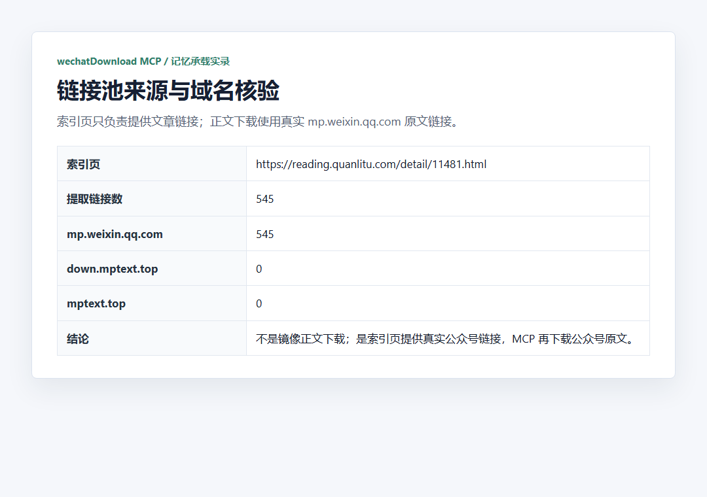
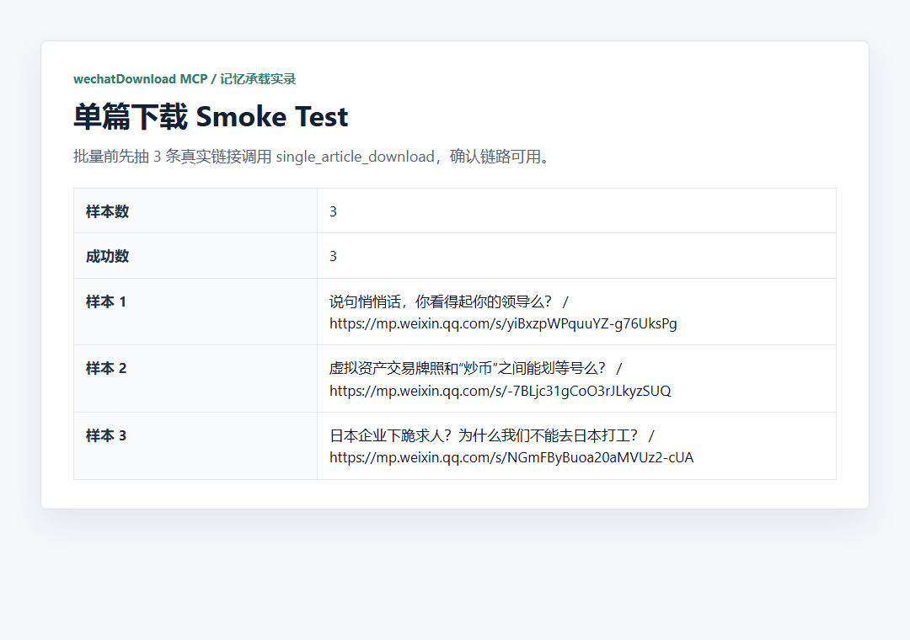
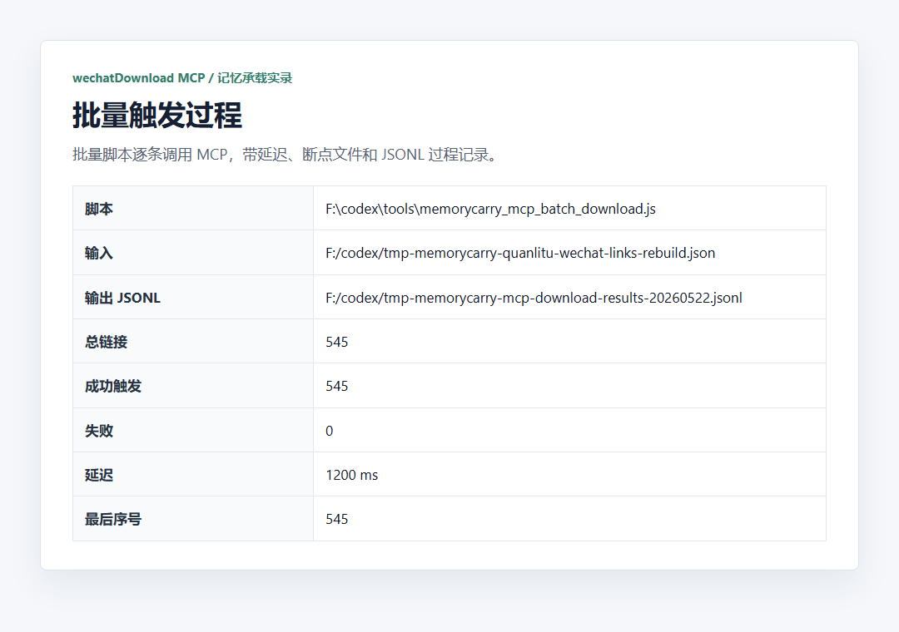
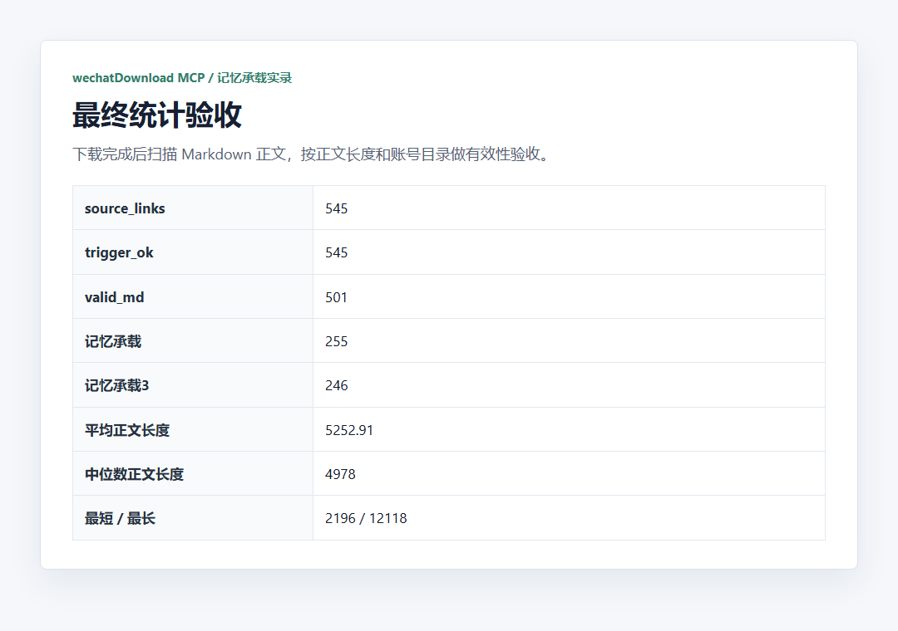
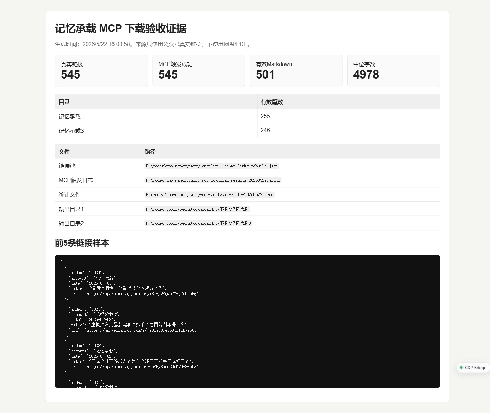

史上最好用的公众号文章批量下载工具：wechatDownload MCP 实测
一句话说明：wechatDownload MCP 是本地微信公众号文章批量下载工具。它不是搜索器，必须先有真实公众号文章 URL。
这次我拿“记忆承载”做样本，跑了一遍完整链路：先从索引页拿到真实 `mp.weixin.qq.com/s/...` 链接，再交给本地 MCP 服务批量下载，最后扫描本地 Markdown 正文做验收。
重点不是“网页保存了一份”，而是 Agent 可以通过 JSON-RPC 调用工具，把公众号文章正文、HTML、MHTML、DOCX、PDF 和图片都落到本地，后续继续分析。
先看总览图：这套工具的核心是“真实链接池 -> MCP 调用 -> 本地落盘 -> 统计验收”。

工具概览图：从链接池到 MCP 调用，再到本地多格式落盘。
一、这个工具到底解决什么问题
很多公众号文章适合长期保存：做选题研究、账号分析、知识库整理、NotebookLM 导入、PDF 汇总，都需要稳定拿到正文和素材。
人工一篇篇打开、复制、另存，非常慢，也不适合交给 Agent 反复执行。wechatDownload MCP 的价值就是把这件事变成一个本地可调用工具。
545 条链接
从索引页提取出来的公众号文章 URL。
545 条触发成功
逐条交给 MCP 工具下载，触发环节全部完成。
501 篇有效 Markdown
最终本地扫描到的有效正文数量。
支持多格式落盘
包括 md、html、mhtml、docx、pdf、images。
二、它是怎么工作的
本地启动工具后，会出现一个 MCP 入口。Agent 不需要模拟鼠标点网页，而是直接通过 JSON-RPC 调用工具能力。

工具列表截图：`single_article_download`、`batch_download_articles`、`export_article_data` 是核心能力。
完整流程可以压成四步：
三、正文来源必须说清楚
这篇很容易被误解成“万能公众号搜索工具”。不是。它不负责搜索文章，也不保证凭空找到某个公众号的全部历史内容。
这次链接池来自第三方索引页，但正文下载使用的是提取出来的真实 `mp.weixin.qq.com/s/...` 链接。也就是说，索引页只提供入口，不是正文来源。

链接池核验截图：需要确认最终交给工具的是公众号原文链接。
正确理解：第三方索引页提供 URL 列表，正文来源仍然是 `mp.weixin.qq.com/s/...`。
四、批量前先做 smoke test
批量下载最怕一上来就全量跑。正确做法是先抽 3 条链接，调用单篇下载，确认目录里真的出现正文和素材，再启动全量任务。

单篇 smoke test：先验证下载链路，再做 545 条批量触发。

批量触发截图：逐条把真实链接交给 MCP 工具，建议保留延迟，避免队列拥堵。
五、最终要看本地结果，不只看日志
触发成功只是第一层。真正可用的结果，要看本地有没有正文、图片、网页快照和可继续分析的文件结构。

本地落盘结构：正文和素材按目录保存，后续可以继续做统计、总结和检索。

最终统计截图：本轮 545 条触发成功，扫描到 501 篇有效 Markdown 正文。

原始下载证据：最终验收看本地文件，不只看工具界面或脚本输出。
六、保留 3 条核心命令就够了
公众号里代码块不要太重。真正需要复用的命令只保留三条：检查服务、批量触发、统计正文。
七、边界必须写在最后
它不是搜索器
需要先有 URL 列表，不能凭空找到所有历史文章。
正文来源必须是公众号原文
也就是 `mp.weixin.qq.com/s/...`。第三方索引页只提供链接，不是正文来源。
原文删除后可能失败
只要依赖公众号原文链接，就会受原文可访问状态影响。
所以这套工具最适合的场景是：你已经有一批真实公众号文章 URL，想把下载、落盘、统计和后续分析交给本地 Agent 自动完成。